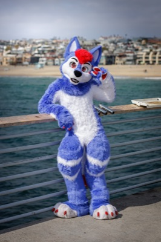

About Me

Photo by @joeythefurHey! I'm Aspy, and I'm a hobby photographer local to Southern California. I've been shooting fursuit photos for around a year now, and I'm slowly improving with the hope of taking on more serious work, such as staffing for conventions. I don't have any set rate for shoots, and I take pictures at events for fun, so if you catch me around, feel free to ask for a photo!
Apart from photography, I'm pursuing a baccalaureate in Electrical Engineering, and I work part-time at a coffee shop. As for other hobbies, I like to play the piano, drive to coffee shops, and visit the gym.
My main goal for this site was to have my own place to organize and display my favorite photos in full quality in the exact way I wanted. I might expand this website for other uses, but it's just a little gallery for now. All feedback is appreciated, as I want to maintain and improve this page for as long as I'm a photographer.
My photos are free to use online as long as you credit me (@aspy7777).
Thank you for visiting!
Upcoming Conventions
My Gear
- Sony Alpha 7 IV
- Sigma 50mm f/1.4 DG DN Art
- Sigma 85mm f/1.4 DG DN Art
- Tamron 28-75mm f/2.8 Di III RX